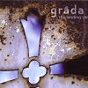

Celtic Lyrics Corner > Artists & Groups > Gráda > The Landing Step
|  |
The Landing Step
(2004) |
| Tracks : |
1.
Tread Softly
2. Go N'éirí An Bóthar Leat 3. Isabelle 4. Weight Of The World 5. Seven Of Eight 6. All In One Day 7. The Back Of Beyond 8. Manuku Swing 9. Shock On 10. Dear Mary 11. À L'envers |